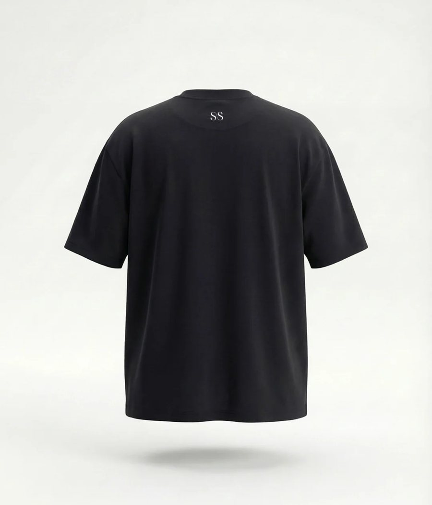
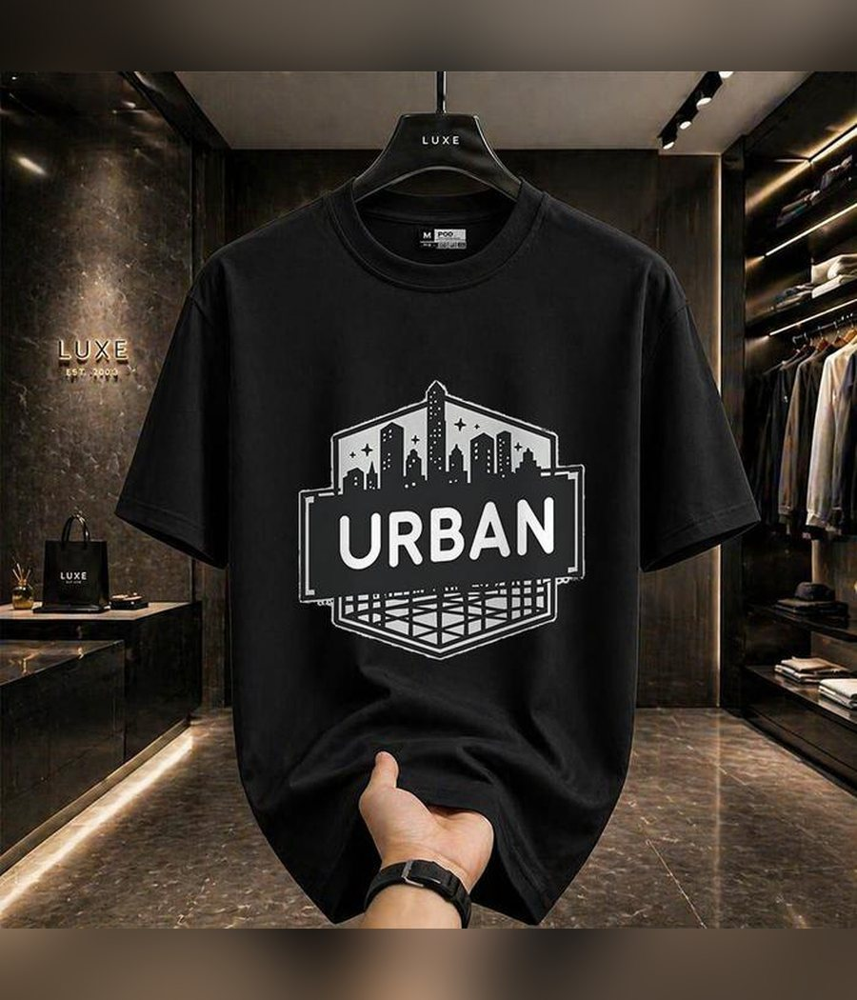
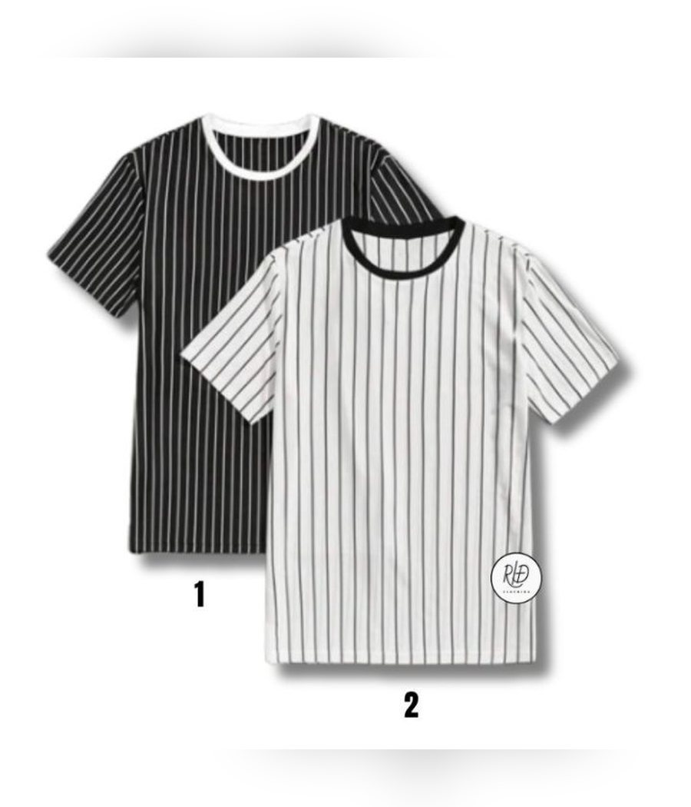

Kaos Pria
Potongan maskulin yang nyaman untuk aktivitas harian, dari basic hingga statement.
Lihat ProdukPilih kategori yang sesuai dengan gaya Anda. Setiap kategori mengarah ke daftar produk yang sudah terfilter.
Potongan maskulin yang nyaman untuk aktivitas harian, dari basic hingga statement.
Lihat Produk
Siluet fitted dan cropped dengan bahan lembut, mudah dipadukan dengan outfit apa pun.
Lihat Produk
Potongan longgar dengan bahu turun untuk tampilan santai yang tetap rapi.
Lihat Produk
Kaos polos esensial berbahan katun pilihan sebagai fondasi lemari pakaian.
Lihat Produk
Desain grafis orisinal NIFSTORE yang minimalis dan mudah dipakai setiap hari.
Lihat Produk